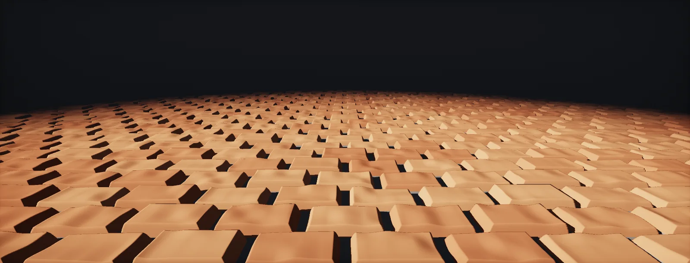

Parallax Mapping and POM
Bricks that hide their mortar, cobbles that cover each other: depth on a flat surface, computed per pixel from a height map. From a one-sample guess to parallax occlusion mapping with shadows.

Height maps and view shift
A normal map changes how light hits a flat surface, but every texel stays exactly where it is. Look at a brick wall at an angle and the bricks should hide the mortar behind them; with a normal map alone, they never do. fixes that by changing which texel a pixel shows, using a (stored here as depth: 0 at the surface, 1 at the deepest point).
Everything happens in tangent space, where the surface is flat, x and y run along the UVs and z points out. Seen from an angle θ away from the normal, a sightline moving one unit deeper into the surface also moves sideways across the texture, by tan θ:
That sideways shift is the whole effect. Near the normal it is tiny; at grazing angles it explodes, which is where all parallax techniques struggle. Every method in this unit is a way of finding where the sightline actually meets the height field.
Offset parallax
The cheapest method reads the height once, at the pixel's own UV, and assumes the whole surface has that depth. It shifts the UV along the view direction by that depth, using the view vector in tangent space V (the same view vector as in Interior Mapping):
That works when the height changes slowly, and breaks at steep steps and grazing angles, where the guess lands on the wrong brick. A common variant, offset limiting, drops the division by V.z: the shift then never grows beyond the depth itself, which hides the worst errors at grazing angles at the cost of a weaker effect.
Steep parallax
To find the real intersection, march: slice the depth range into N layers, step the UV a little at each layer, and stop at the first layer that is deeper than the height map at that UV. It is the same kind of raymarch as for clouds, but the stop condition is "below the surface":
With few layers the result is visibly stepped: the surface looks like a stack of slices. More layers cost one texture sample each.
Parallax occlusion mapping
(POM) adds one step to the march: the true intersection lies between the last layer above the surface and the first below. Treat the height between those two samples as a straight line and solve for where the sightline crosses it, a single lerp:
// POM core (depth map: 0 = surface, 1 = deepest) float2 dUV = -V.xy / V.z * scale / numLayers; // V = view dir in tangent space, toward the camera float layer = 0, dLayer = 1.0 / numLayers; float2 uv = uv0; float d = SampleDepth(uv); [loop] while (layer < d) { uv += dUV; layer += dLayer; d = SampleDepth(uv); } float2 prevUV = uv - dUV; float after = d - layer; float before = SampleDepth(prevUV) - (layer - dLayer); float w = after / (after - before); uv = lerp(uv, prevUV, w);
Adaptive layer count
Seen straight on, the shift is tiny and a few layers are enough; at grazing angles the sightline crosses a long stretch of texture and needs many. So the layer count follows the angle, using the dot product of normal and view direction:
Every layer is a texture fetch in a loop, the most expensive kind of shader work (what a shader costs). POM on a full-screen surface at 32 layers is 32 extra fetches per pixel, plus the shadow march in the next chapter. Fade POM out with distance, where the effect is invisible anyway (distance fades).
Self-shadowing
Bricks that hide mortar should also shade it. From the point the POM march found, march again, this time toward the light: if the height field rises above that second ray anywhere, the point is in shadow. Taking the largest overshoot instead of a yes/no gives soft shadows:
Gradients, silhouettes and pixel depth offset
Three details separate a usable POM shader from a demo:
- Gradients. Neighbouring pixels hit different layers, so their UVs jump and the hardware mip selection draws seams. Sample with
SampleGradand the gradientsddx(uv0),ddy(uv0)of the original UV. - Silhouettes. POM never changes the outline of the mesh: the edge of a parallax wall is still a straight line. Hide edges with trims, or use real displacement where the silhouette is seen.
- Depth. The depth buffer still holds the flat surface, so objects pushed into the wall intersect it in a straight line. Pixel depth offset writes the deeper hit into the depth buffer instead:
The HDRP Lit shader has Displacement Mode: Pixel Displacement (POM) with Minimum/Maximum Steps, Lock with object scale and Depth Offset. In Shader Graph, the Parallax Occlusion Mapping node returns the offset UVs and a depth offset you can connect to the master stack.
URP Lit supports a Height Map with simple offset parallax only. For POM, use Shader Graph's Parallax Occlusion Mapping node (it works in URP) or a custom function with the loop above.
Use the ParallaxOcclusionMapping material function (Engine content). It takes a height map, height ratio, min/max steps and a light vector for shadows, and outputs offset UVs and a Pixel Depth Offset to connect to the material output.
Alternatives
POM shines on large flat surfaces with shallow relief seen from a moderate angle: walls, floors, cobblestones. Its alternatives trade memory or geometry for quality:
| Technique | Silhouette | Cost | Use for |
|---|---|---|---|
| Normal map only | flat | 1 fetch | fine detail, distant surfaces |
| Offset parallax | flat | 2 fetches | subtle depth on mobile |
| POM | flat | 8–64 fetches | bricks, cobbles, tiles |
| Cone step / relief mapping | flat | fewer steps, extra precomputed texture | deep relief, many surfaces |
| Tessellation displacement | real | many vertices | terrain, close-up hero surfaces |
| Nanite / real geometry | real | memory, streaming | Unreal 5 high-end targets |
Build it in Unity HDRP
HDRP has parallax built in twice: on the Lit material and as a Shader Graph node. The Custom Function version is there for adaptive steps and self-shadowing, which the node does not do. Written for Unity 6 with HDRP 17; Unity 2022 LTS works the same apart from a few renamed menu entries.
- Stock material: HDRP/Lit, Displacement Mode
Pixel displacement, assign the Height Map (sRGB off) and set Amplitude in centimetres and Steps. Depth Offset makes silhouettes against other objects correct. - Shader Graph node: in a Lit graph add Parallax Occlusion Mapping: inputs Heightmap, Amplitude, Steps, UVs; outputs Parallax UVs (use for every texture sample) and Pixel Depth Offset (connect to the Depth Offset block after enabling it in Graph Settings).
- Custom version: save
POM.hlsl. In the graph, add a Custom Function node. Set Type toFile, Source toPOM.hlsland Name toPOM(without the_floatsuffix). Add the inputs HeightTex (Texture2D), SS (SamplerState), UV (Vector 2), ViewDirTS (Vector 3), Scale (Float), MinLayers (Float), MaxLayers (Float) and the outputs UVOut (Vector 2), Depth (Float), in that order and with those types: they must match the function's parameters. - ViewDirTS: a View Direction node in
Tangentspace (from the surface toward the camera, normalized). Scale is the depth as a fraction of the texture's size in UV units (0.02–0.08). - Self-shadow:
POMShadowfrom the same file (inputs HeightTex, SS, UV = UVOut, Depth, LightDirTS, Scale; output Shadow). Get LightDirTS by transforming_SunDirection(see SunToShader) with a Transform node from World to Tangent, Type Direction.
#ifndef ATLAS_POM_INCLUDED
#define ATLAS_POM_INCLUDED
// Height map convention: 1 = top surface, 0 = deepest. depth = 1 - height.
void POM_float(UnityTexture2D HeightTex, UnitySamplerState SS, float2 UV, float3 ViewDirTS,
float Scale, float MinLayers, float MaxLayers, out float2 UVOut, out float Depth)
{
float3 V = normalize(ViewDirTS);
float layers = lerp(MaxLayers, MinLayers, saturate(V.z)); // fewer layers when looking straight on
float layerStep = 1.0 / layers;
float2 duv = -V.xy / max(V.z, 0.05) * Scale * layerStep; // sightline shift per layer
float2 dx = ddx(UV), dy = ddy(UV); // gradients of the original UV
float2 uv = UV;
float layerDepth = 0;
float mapDepth = 1.0 - SAMPLE_TEXTURE2D_GRAD(HeightTex.tex, SS.samplerstate, uv, dx, dy).r;
float2 prevUV = uv; float prevDiff = -mapDepth;
[loop] for (int i = 0; i < 64 && layerDepth < mapDepth; i++)
{
prevUV = uv; prevDiff = layerDepth - mapDepth;
uv += duv;
layerDepth += layerStep;
mapDepth = 1.0 - SAMPLE_TEXTURE2D_GRAD(HeightTex.tex, SS.samplerstate, uv, dx, dy).r;
}
// interpolate between the last two layers (parallax occlusion mapping)
float after = layerDepth - mapDepth, before = prevDiff;
float w = after / max(after - before, 1e-5);
UVOut = lerp(uv, prevUV, w);
Depth = lerp(layerDepth, layerDepth - layerStep, w);
}
void POMShadow_float(UnityTexture2D HeightTex, UnitySamplerState SS, float2 UV, float Depth,
float3 LightDirTS, float Scale, out float Shadow)
{
float3 L = normalize(LightDirTS);
Shadow = 1;
if (L.z <= 0) { Shadow = 0; return; }
float2 dx = ddx(UV), dy = ddy(UV);
const int steps = 16;
float2 duv = L.xy / L.z * Scale * Depth / steps;
float d = Depth, blocked = 0;
[loop] for (int i = 1; i <= steps; i++)
{
d -= Depth / steps; // the ray rises toward the light
float h = 1.0 - SAMPLE_TEXTURE2D_GRAD(HeightTex.tex, SS.samplerstate, UV + duv * i, dx, dy).r;
blocked = max(blocked, (d - h) * (1.0 - (float)i / steps)); // how far the surface rises above the ray
}
Shadow = 1.0 - saturate(blocked * 8.0);
}
#endifEvery texture of the material must be sampled with UVOut, including the normal map. Pixel depth offset for the custom version: offset = Depth × Scale × tile size in metres / ViewDirTS.z, written to the Depth Offset block.
URP/Lit has Height Map with simple offset parallax only. The Parallax Occlusion Mapping node and the Custom Function work in URP graphs as well.
The ParallaxOcclusionMapping material function (Heightmap Texture, Height Ratio, Min/Max Steps, Light Vector for shadows) returns Parallax UVs and a Pixel Depth Offset output; enable Pixel Depth Offset on the material.
Sources and further reading
The formulas and engine details in this unit come from these references. Engine documentation changes between versions.
- TutorialParallax MappingJoey de Vries · LearnOpenGLOffset, steep and occlusion parallax with code, in the same structure as this unit.
- DocsParallax Occlusion Mapping nodeUnity · Shader Graph 17Inputs and outputs of Unity's POM node.
- BookGPU Gems 2, chapter 8: Per-Pixel Displacement Mapping with Distance FunctionsWilliam Donnelly · NVIDIAA faster alternative to fixed layer steps.